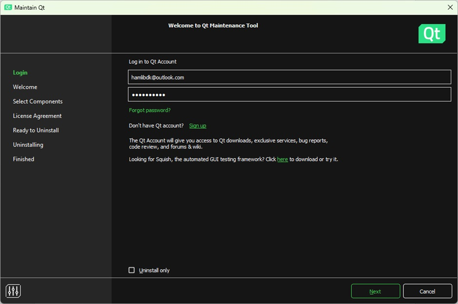
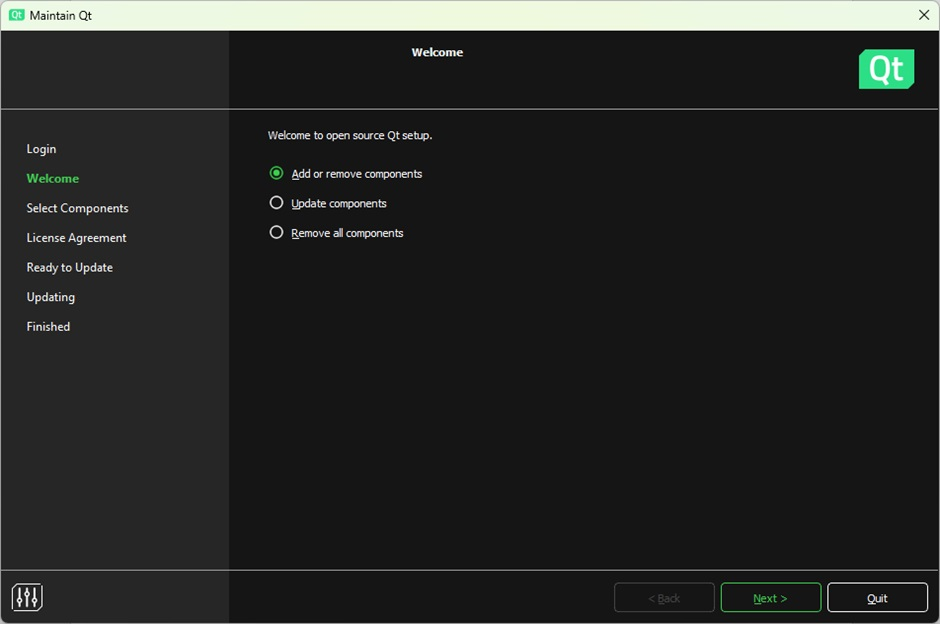
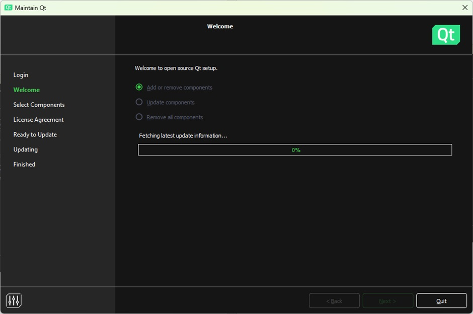
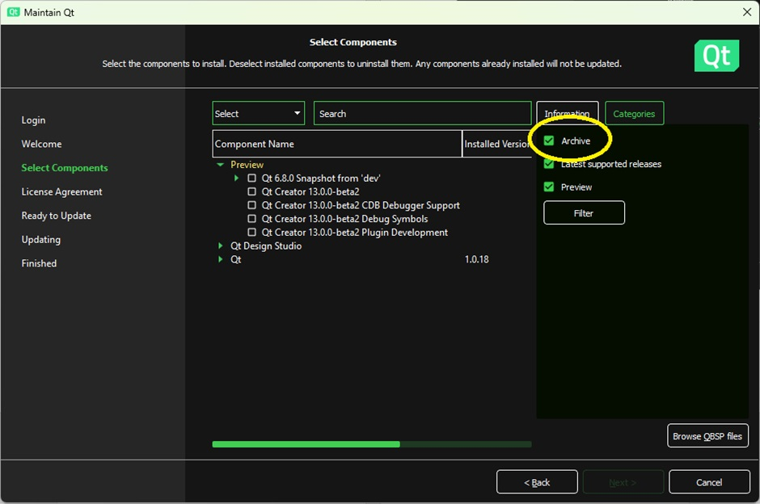
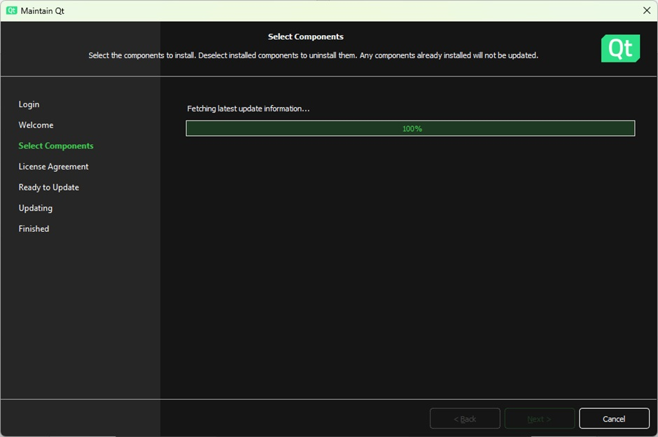
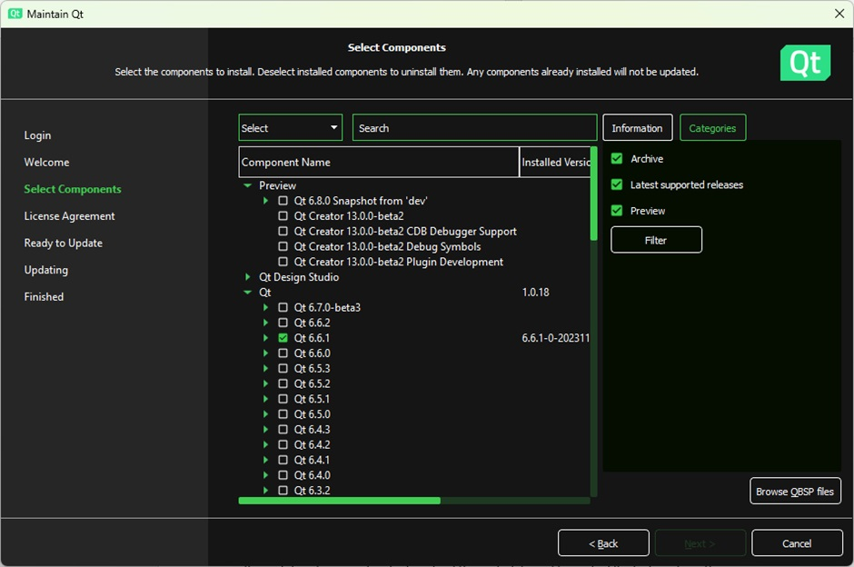
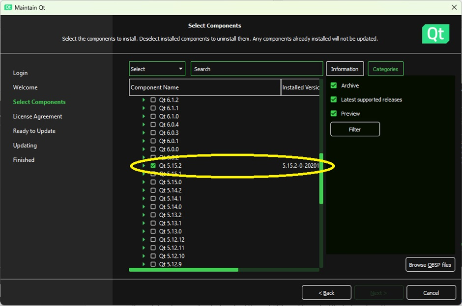
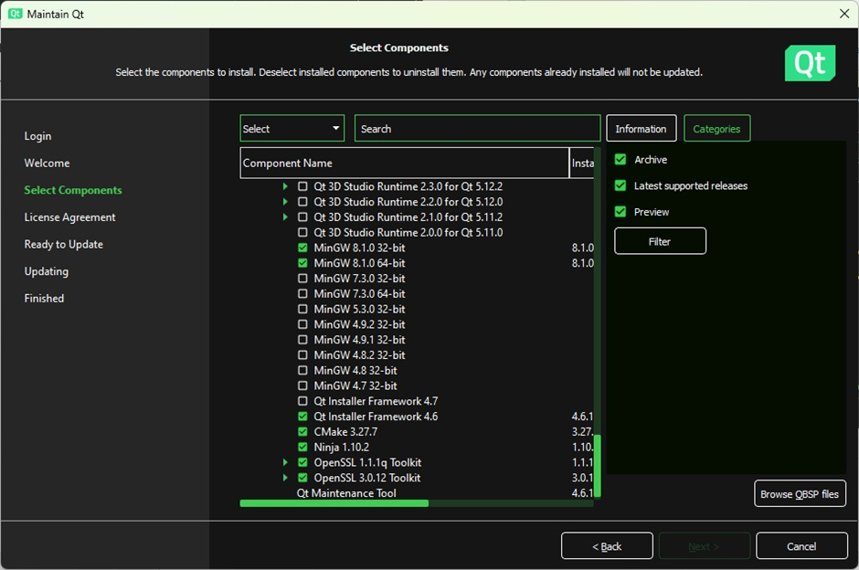
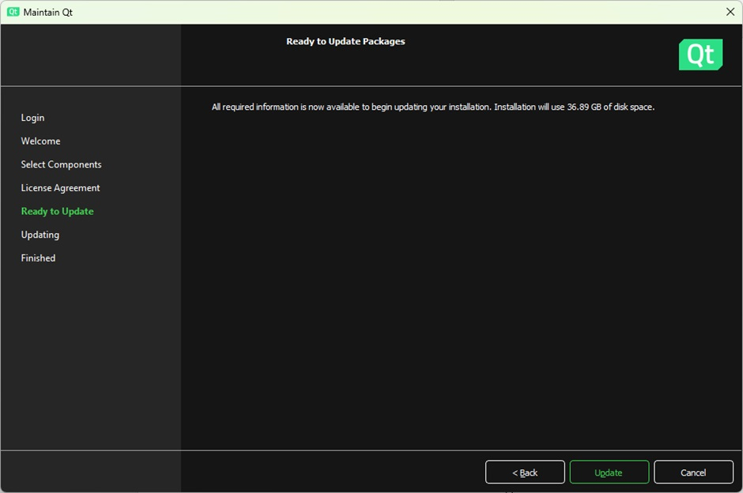

|
|
HAMLIB SDKEvolving the JT-ware Software Developer's Kit (JTSDK) |
|
|
As of March 2024 Qt 5.15.2 is no longer available from mainstream installer repositories.
This does not mean that it is gone and that one cannot install it any more.
The Qt Maintainers offer a facility whereby archived versions of their software can be obtained from selected servers.
This guide details how to deploy Qt from Archive. It is based on a primary document stored at https://sourceforge.net/projects/hamlib-sdk/files/JTware-Deployment/Deploying-Archived-Versions-of-Qt-via-Maintenance-Tool.docx .
Note: This guide assumes that a version of Qt i.e. Qt 6.2.2 is deployed.
The Qt Maintenance Tool MaintenanceTool.exe should be able to be found in your Qt deployment directory
You should be presented with a screen similar to that shown below:

| If you do not have a Qt Account then please sign up for one by clicking Sign Up |
You should be presented with a screen similar to that shown below:

The Qt installer will now download components from its pool repository.

The Qt Maintenance Tool fetches update info for code released through mirrors …
This is inadequate for us as it does not necessarily provide versions that we require.
Wait until the metadata is completely loaded into the system.
You should be presented with a screen similar to that shown below:

This loads “Archive Repository” information into the Installer/Maintenance Tool

It may take a few minutes do download the metadata and to contact/test sites where these “archived” deployments can be obtained from.
In this example we will refer to Qt 5.15.2:




Updates should now occur (Note a Version 6.7.0 update progress is shown in this example).
Once complete your archived deploy should now be available.
| Editor: Steve VK3VM/VK3SIR | Contact |